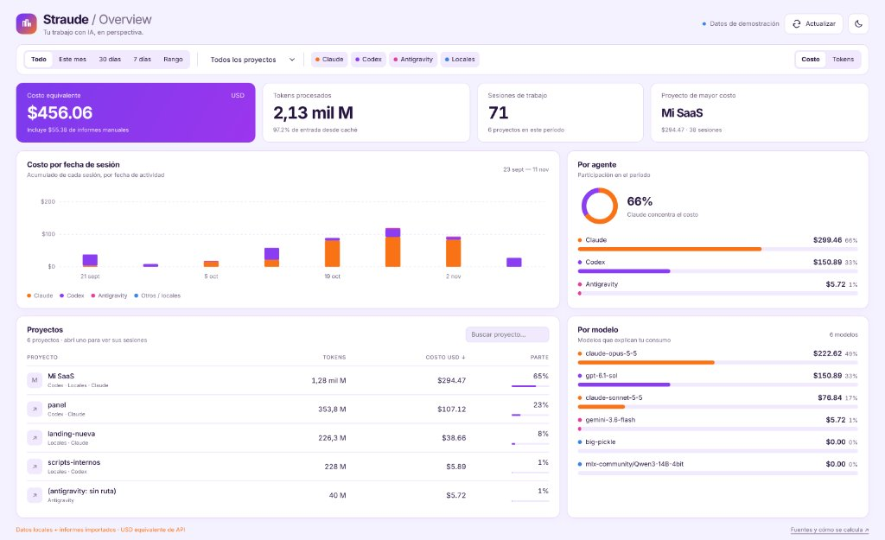

Productización: UX,
Front-End y Go-to-Live
De tu idea o flujo agéntico a un producto publicado en vivo.
Axel Laban Arzubi · eCommerce Institute · 19 de noviembre
Nadie usa un prompt suelto.
La gente usa productos.
Hasta la Clase 4 armamos el motor (agentes). Hoy le ponemos interfaz, acceso y una URL real.
La tecnología dejó de ser el cuello de botella:
hoy gana la distribución y la UX
 Claude Code
Claude Code
 Codex
Codex
 Antigravity
Antigravity
 v0
Lovable
v0
Lovable
 Cursor
Cursor
 Notion
Notion
 Drive
Drive
 Calendar
Calendar
 Gmail
Gmail
 Slack
Slack
 Linear
Linear
 Supabase
Supabase
 Firebase
Firebase
 Clerk
Clerk
 Postgres
Postgres
 Airtable
Airtable
 Sheets
Sheets
 n8n
n8n
 Make
Make
 Zapier
Zapier
 GitHub Actions
Claude Routines
GitHub Actions
Claude Routines
 WhatsApp
WhatsApp
 Stripe
Stripe
 Mercado Pago
Mercado Pago
 Shopify
Shopify
 HubSpot
HubSpot
 GitHub
Vercel
GitHub
Vercel
 Cloudflare
Cloudflare
 Railway
Railway
 PostHog
PostHog
Antes de construir: 3 definiciones
¿Quién la usa?
La persona concreta y desde dónde entra (casi siempre celular).
¿Qué dolor resuelve?
Una sola tarea repetitiva o duda puntual que le ahorrás.
¿Qué botón toca?
El único paso central que dispara el valor del producto.
UX vs. UI: dos preguntas distintas
UX · Experiencia
Que cualquier persona entienda en 3 segundos qué hacer sin explicaciones.
- Cero fricción: pedir solo el dato mínimo.
- Estado visible: mostrar cuando el agente trabaja.
UI · Interfaz
Orden visual, contraste, aire entre bloques y un botón principal obvio.
- Un solo foco: 1 pantalla = 1 acción clara.
- Mobile-First: cómoda para usar con el pulgar.
4 formatos: ¿qué vamos a publicar?
Front-End = lo que ve el usuario · Back-End = agentes, lógica y base de datos
Landing Page
1 pantalla · 1 acciónValidar una idea o captar interesados rápido.
Sitio Web
Varias seccionesMostrar catálogo, servicios o documentación.
Dashboard
Panel de métricasMonitorear KPIs, costos o actividad de agentes.
Aplicación (App)
Login + Agente + DatosCada usuario entra con su cuenta y sus datos.
Claridad en 1 pantalla: Straude Dashboard

- 4 KPIs arriba: gasto, tokens y sesiones.
- Multi-agente: Claude, Codex y Antigravity.
- Todo a la vista: cero menús ocultos.
¿Qué herramienta elegir o combinar?
v0 · Gemini Canvas
De una idea a una interfaz o dashboard en segundos.
🎯 Ideal para Front-EndLovable
Crea pantallas, base de datos y login conversando.
🎯 Ideal para MVP con usuariosClaude Code · Antigravity · Codex
Editan tu código en GitHub, suman MCPs y rutinas.
🎯 Ideal para control total
Abrir Claude y
conectar GitHub
GitHub: versiones, equipo y agentes
Versiones (Commits)
Cada cambio queda guardado para volver atrás si algo se rompe.
Colaboradores
Varias personas construyendo sobre el mismo proyecto.
Rutinas de Agentes
Tareas periódicas con Claude Code, Actions, n8n o Make.
4 repositorios reales para aprovechar hoy
Desarmar cómo está hecho
Auditar su arquitectura con IA y reutilizar lo mejor.
Clon abierto de Splitwise
Partir de una app validada y adaptarla a tu nicho.
Limpiar el "AI Slop"
Eliminar frases robóticas en textos e interfaces.
Medir tu consumo de IA
Tablero propio de costos en Claude, Codex y Antigravity.
Abrir GitHub y sumar
un colaborador
GitHub → Vercel: del código a una URL
🧪 Preview Link temporal de prueba ·
🟢 Producción URL pública oficial en main
Importar el proyecto
en Vercel
La app por dentro: viaje de una consulta
Dos reglas que cuidan tu producto
Login vs. Permisos
Login identifica quién sos; Permisos aseguran que cada persona vea solo sus propios datos.
Claves fuera de GitHub
Las API Keys nunca van en el código: se guardan en el panel de Vercel.
process.env.OPENAI_API_KEY
Usar Computer Use para
configurar credenciales
Cómo escalar sin sobrecomplejizar
.env y vista previa.
¿Verdadero o Falso?
| Afirmación | Respuesta | Por qué |
|---|---|---|
| 1. GitHub permite trabajo en equipo y rutinas periódicas de agentes. | VERDADERO | Colaboran personas + Claude Code, Actions, n8n o Make. |
| 2. Conviene elegir las herramientas según lo que necesita el proyecto. | VERDADERO | Definís pantallas, datos o login y combinás el stack. |
| 3. Que una app se vea bien alcanza para saber que funciona. | FALSO | Hay que probar botones y flujo real en el celular. |
| 4. Una app con cuentas debe aislar los datos de cada usuario. | VERDADERO | Login identifica; permisos cuidan la privacidad. |
| 5. Cuantas más funciones tenga una app, más útil resulta. | FALSO | Gana resolver una necesidad clara con una acción simple. |
Links y recursos
1. Interfaz y Apps
- v0.dev ↗ — UI y dashboards
- Lovable ↗ — Full-stack visual
- Gemini Canvas ↗ — Prototipos
2. Agentes de Código
- Claude Code ↗ — Agentes y rutinas
- Antigravity ↗ — IDE agent-first
- Codex ↗ — Tareas en tu repo
3. Repos y Deploy
El cambio de chip
Un agente en tu compu es un experimento.
Un agente con una URL es un producto.
De programar durante meses
a publicar en una tarde.De enamorarte del modelo
a diseñar el arnés y la UX.De guardarlo en tu máquina
a probarlo con usuarios reales.La barrera técnica desapareció. Ahora gana el que publica, mide e itera agregando valor.